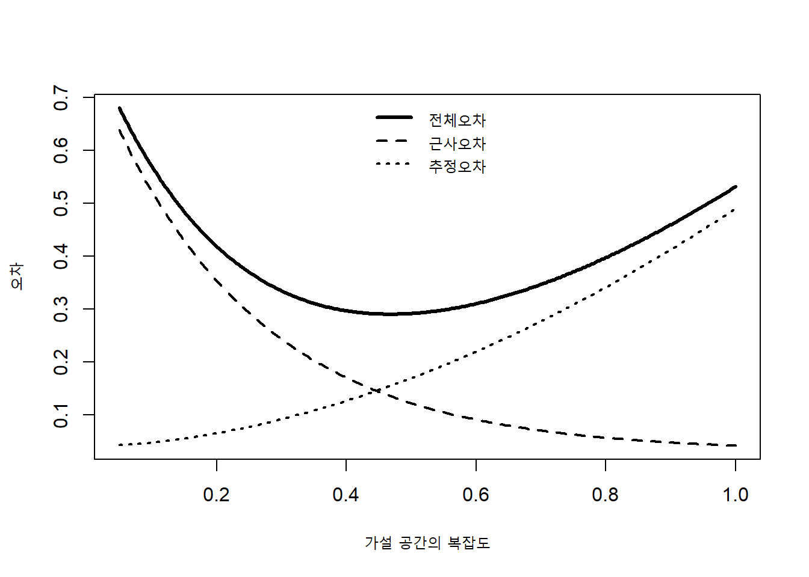
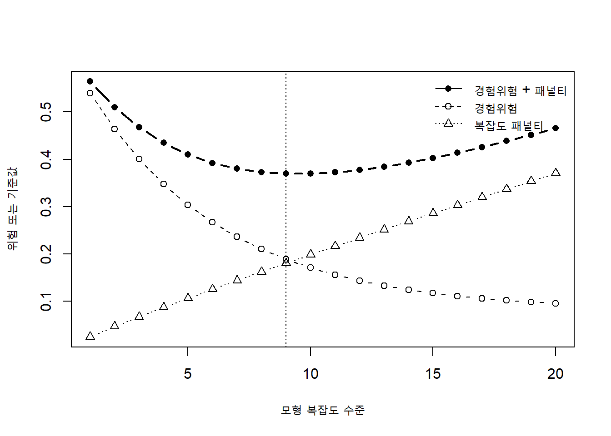
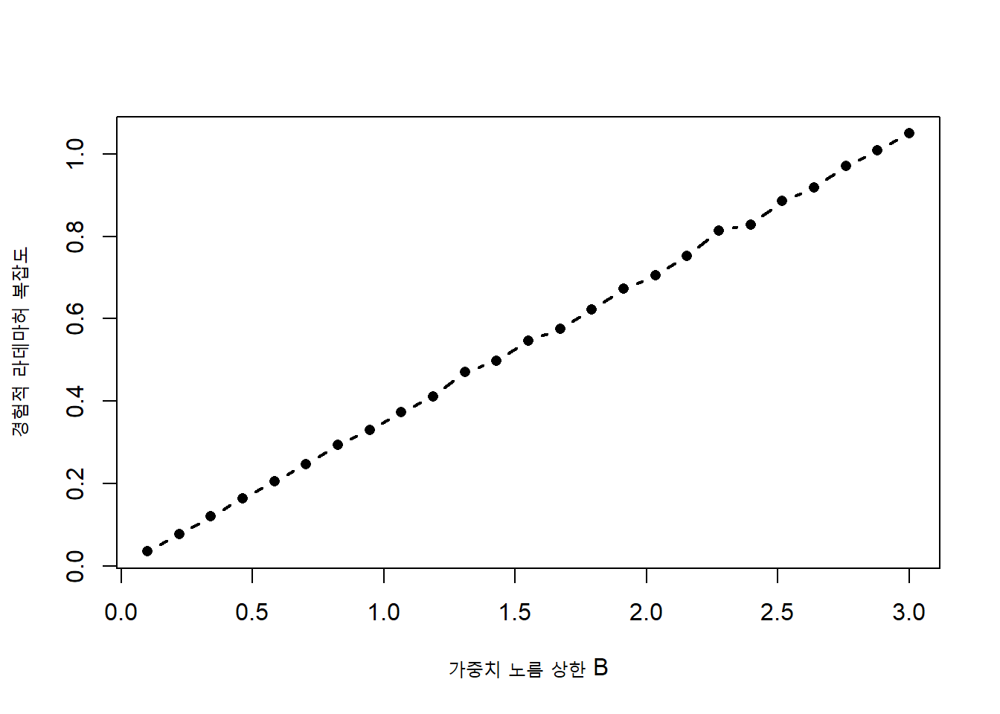
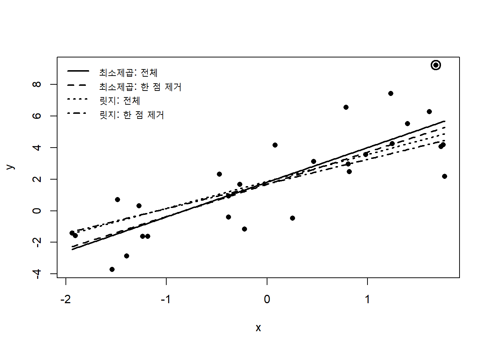
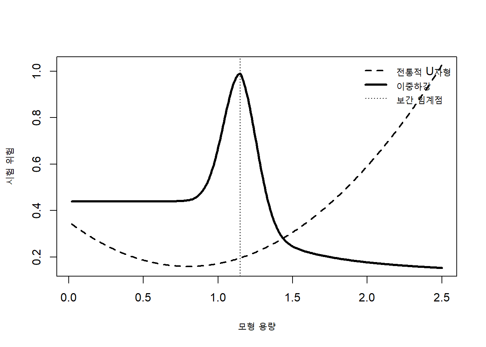

12 계산 학습 이론
머신러닝의 핵심 목표는 관측된 훈련자료에만 잘 맞는 함수를 찾는 것이 아니라, 아직 관측하지 않은 새로운 자료에서도 작은 오차를 갖는 함수를 학습하는 데 있다. 앞 장에서는 훈련오차와 시험오차, 교차검증, 규제, 편향과 분산을 통해 일반화 문제를 경험적으로 살펴보았다. 이 장에서는 한정된 표본으로부터 학습한 모형이 왜, 그리고 어떤 조건에서 새로운 자료에 일반화할 수 있는지를 수학적으로 다룬다.
계산 학습 이론은 다음 세 질문을 중심으로 전개된다.
- 어떤 가설 공간이 자료로부터 학습 가능한가?
- 원하는 정확도와 신뢰도를 얻기 위해 얼마나 많은 표본이 필요한가?
- 학습 알고리즘과 가설 공간의 복잡도는 일반화오차에 어떤 영향을 주는가?
이 질문들은 서로 밀접하게 연결되어 있다. 지나치게 큰 가설 공간은 매우 다양한 자료 패턴을 표현할 수 있지만 제한된 표본에서는 과적합되기 쉽다. 반대로 지나치게 작은 가설 공간은 안정적일 수 있으나 실제 자료생성 구조를 충분히 표현하지 못할 수 있다. 계산 학습 이론은 이러한 표현력과 일반화 능력 사이의 균형을 확률부등식, 복잡도 척도, 안정성 개념으로 정식화한다.
노트이 장의 관점
이 장의 목적은 모든 정리를 완전하게 증명하는 데 있지 않다. 일반화 경계가 어떤 가정에서 유도되며, 경계식의 각 항이 모형 선택과 규제에 어떤 의미를 갖는지를 이해하는 데 초점을 둔다.
12.1 기초 지식
12.1.1 학습 문제의 확률적 표현
입력공간을 (X), 출력공간을 (Y)라 하자. 지도학습에서는 입력과 출력의 쌍
\[ Z=(X,Y)\in\mathcal Z=\mathcal X\times\mathcal Y \]
이 알려지지 않은 확률분포 (P)를 따른다고 가정한다. 훈련자료는 보통 다음과 같이 독립이고 동일한 분포를 따르는 표본으로 표현한다.
\[ S=\{Z_1,\ldots,Z_n\} = \{(X_1,Y_1),\ldots,(X_n,Y_n)\} \overset{\mathrm{iid}}{\sim}P^n. \tag{12.1}\]
가설 또는 예측함수를 (hH)라 하고, 손실함수를
\[ \ell:\mathcal Y\times\widehat{\mathcal Y}\longrightarrow\mathbb R_+ \]
로 정의한다. 여기서 ()는 예측값의 공간이다. 분류에서는 0-1 손실, 회귀에서는 제곱손실이나 절대손실을 사용할 수 있다.
가설 (h)의 모집단 위험 또는 기대위험(expected risk)은
\[ R(h) = E_{(X,Y)\sim P} \left[ \ell\{Y,h(X)\} \right] \tag{12.2}\]
로 정의한다. 하지만 실제 학습에서는 (P)를 알 수 없으므로 기대값을 직접 계산할 수 없다. 대신 훈련표본에서 경험위험을 계산한다.
\[ \widehat R_S(h) = \frac{1}{n} \sum_{i=1}^{n} \ell\{Y_i,h(X_i)\}. \tag{12.3}\]
학습 알고리즘 (A)는 표본 (S)를 입력받아 하나의 가설을 반환하는 사상이다.
\[ A:S\longmapsto h_S=A(S). \tag{12.4}\]
따라서 일반화 분석의 대상은 고정된 (h)만이 아니라, 자료에 의존하여 선택된 (h_S)이다. 이 차이가 중요하다. 미리 정해진 하나의 모형에 대한 표본평균의 수렴은 비교적 간단하지만, 같은 자료를 사용하여 많은 후보 중 가장 성능이 좋은 모형을 선택하면 선택 과정 자체가 추가적인 낙관성을 만든다.
12.1.2 실현 가능 설정과 불가지론적 설정
학습이론에서는 문제를 두 가지 설정으로 구분한다.
실현 가능 설정(realizable setting)에서는 가설 공간 (H) 안에 완전한 정답이 존재한다고 가정한다. 이진 분류에서 어떤 (h^H)가 존재하여
\[ P\{h^\star(X)\neq Y\}=0 \tag{12.5}\]
이라고 가정하는 경우이다. 훈련자료에도 잡음이 없으며, 일관된 가설은 모든 훈련관측값을 정확히 분류한다.
불가지론적 설정(agnostic setting)에서는 실제 자료생성 규칙이 (H)에 포함된다고 가정하지 않는다. 레이블 잡음, 모형 오지정, 측정오차가 존재할 수 있으며, 목표는 (H) 안에서 가능한 최선의 가설에 가까운 함수를 찾는 것이다.
\[ h^\star_{\mathcal H} \in \arg\min_{h\in\mathcal H}R(h). \tag{12.6}\]
불가지론적 설정에서 관심 대상은 초과위험(excess risk)이다.
\[ R(h_S)-\inf_{h\in\mathcal H}R(h). \tag{12.7}\]
이 값은 학습된 모형이 동일한 가설 공간 안의 최선의 모형보다 얼마나 나쁜지를 나타낸다.
12.1.3 근사오차, 추정오차와 최적화오차
전체 예측오차를 이해하려면 가설 공간의 표현력, 유한 표본의 불확실성, 계산 알고리즘의 한계를 구분해야 한다. 모든 측정 가능한 함수의 집합에서 베이즈 최적 예측함수를 (h^)라 하고, (H) 안의 최적 가설을 (h^{H}), 경험위험 최소화(empirical risk minimization) 해를 (h{H}), 실제 계산 알고리즘이 반환한 해를 (h)라 하자. 그러면 다음과 같은 개념적 분해를 생각할 수 있다.
\[ R(\widetilde h)-R(h^\star) = \underbrace{R(h^\star_{\mathcal H})-R(h^\star)}_{\text{근사오차}} + \underbrace{R(\widehat h_{\mathcal H})-R(h^\star_{\mathcal H})}_{\text{추정오차}} + \underbrace{R(\widetilde h)-R(\widehat h_{\mathcal H})}_{\text{최적화오차}}. \tag{12.8}\]
근사오차는 가설 공간이 실제 관계를 충분히 표현하지 못해서 발생한다. 추정오차는 유한한 표본으로 가설을 선택하기 때문에 발생한다. 최적화오차는 목적함수의 정확한 최솟값을 찾지 못하기 때문에 발생한다.
가설 공간을 확대하면 근사오차는 감소하는 경향이 있지만 추정오차는 증가할 수 있다. 계산이 복잡한 가설 공간에서는 최적화오차도 커질 수 있다. 따라서 좋은 학습은 세 오차를 동시에 고려해야 한다.
그림 12.1는 복잡도가 증가할 때 근사오차와 추정오차가 반대 방향으로 움직일 수 있음을 보여준다. 실제 경계식에서는 이 균형이 경험위험과 복잡도 패널티의 합으로 나타난다.
12.1.4 확률수렴과 일반화
고정된 가설 (h)에 대해 손실이 적절한 조건을 만족하면 대수의 법칙에 의해
\[ \widehat R_S(h) \overset{P}{\longrightarrow} R(h) \qquad (n\rightarrow\infty) \tag{12.9}\]
가 성립한다. 이것은 하나의 고정된 함수에 대한 점별수렴이다.
그러나 학습 알고리즘은 자료를 본 뒤 가설을 선택한다. 따라서 경험위험 최소화의 정당성을 확보하려면 모든 (hH)에 대해 경험위험이 기대위험에 동시에 가까워야 한다. 이를 균등수렴(uniform convergence)이라고 한다.
\[ \sup_{h\in\mathcal H} \left| R(h)-\widehat R_S(h) \right| \overset{P}{\longrightarrow}0. \tag{12.10}\]
균등수렴이 성립하면 경험위험이 작은 가설을 선택하는 것이 모집단 위험이 작은 가설을 선택하는 것과 가까워진다. 실제로 경험위험 최소화 해
\[ \widehat h \in \arg\min_{h\in\mathcal H}\widehat R_S(h) \]
에 대해 다음 부등식이 성립한다.
\[ R(\widehat h)-R(h^\star_{\mathcal H}) \leq 2\sup_{h\in\mathcal H} \left| R(h)-\widehat R_S(h) \right|. \tag{12.11}\]
이 결과는 계산 학습 이론의 핵심 논리를 보여준다. 경험위험 최소화의 초과위험은 경험위험과 기대위험의 최대 차이를 제어함으로써 제한할 수 있다.
12.1.5 일반화 차이와 초과위험
가설 (h_S)의 일반화 차이(generalization gap)는
\[ \operatorname{gen}(S) = R(h_S)-\widehat R_S(h_S) \tag{12.12}\]
로 정의할 수 있다. 훈련오차가 모집단오차보다 작다면 일반화 차이는 양수이다. 하지만 초과위험과 일반화 차이는 같은 개념이 아니다.
- 일반화 차이는 동일한 학습된 함수에 대해 훈련표본 성능과 모집단 성능을 비교한다.
- 초과위험은 학습된 함수와 가설 공간 안의 최적 함수를 비교한다.
모형 선택과 이론 분석에서는 두 양을 구분해야 한다.
12.1.6 집중부등식
일반화 경계는 표본평균이 기대값에서 크게 벗어날 확률을 제한하는 집중부등식(concentration inequality)에서 출발한다. 손실이 ([0,1])에 속하고 (h)가 고정되어 있다고 하자. Hoeffding 부등식(Hoeffding inequality)에 의해
\[ P\left( \left| \widehat R_S(h)-R(h) \right| \geq\varepsilon \right) \leq 2\exp(-2n\varepsilon^2). \tag{12.13}\]
이를 신뢰수준 (1-)의 형태로 바꾸면 확률 (1-) 이상으로
\[ \left| \widehat R_S(h)-R(h) \right| \leq \sqrt{ \frac{\log(2/\delta)}{2n} } \tag{12.14}\]
이 성립한다.
이 경계에서 표본 크기 (n)이 증가하면 오차는 대략 (1/n)의 속도로 감소한다. 신뢰수준을 높여 ()를 작게 만들면 경계는 넓어진다.
중요고정된 가설과 선택된 가설
방정식 12.14는 자료를 보기 전에 고정된 하나의 가설에 대한 결과이다. 같은 자료로 여러 가설을 비교한 뒤 가장 좋은 가설을 선택하면 가설 공간의 크기나 복잡도를 추가로 고려해야 한다.
12.1.7 합집합 부등식
여러 사건 (E_1,,E_m)에 대해 합집합 부등식은
\[ P\left(\bigcup_{j=1}^m E_j\right) \leq \sum_{j=1}^mP(E_j) \tag{12.15}\]
를 제공한다. 유한한 가설 공간에서 각 가설의 일반화 실패 사건에 Hoeffding 부등식을 적용한 뒤 합집합 부등식을 사용하면 모든 가설에 동시에 적용되는 경계를 얻을 수 있다. 이 아이디어가 유한 가설 공간의 표본복잡도(sample complexity) 결과로 이어진다.
12.1.8 일관성, 보편 일관성과 베이즈 일관성
학습 알고리즘의 위험이 표본 크기가 증가할수록 특정 목표 위험으로 수렴하면 일관성이 있다고 한다. 가설 공간 안의 최적 위험으로 수렴하면 (H)-일관성이라 할 수 있다.
\[ R(h_S) \longrightarrow \inf_{h\in\mathcal H}R(h). \tag{12.16}\]
모든 가능한 자료분포에 대해 베이즈 위험으로 수렴하면 보편 일관성 또는 베이즈 일관성이라 한다.
\[ R(h_S)\longrightarrow R^\star. \tag{12.17}\]
일관성은 점근적 성질이다. 실제 분석에서는 유한한 (n)에서 얼마나 큰 오차가 가능한지를 알려주는 비점근적 일반화 경계도 중요하다.
12.2 PAC 학습
12.2.1 아마도 근사적으로 정확한 학습
PAC는 probably approximately correct의 약자이다. 이 개념은 학습 알고리즘이 높은 확률로, 충분히 작은 오차를 갖는 가설을 반환할 수 있는지를 묻는다.
- 근사적으로 정확함은 위험이 허용오차 () 이하임을 의미한다.
- 아마도는 이 성질이 적어도 (1-)의 확률로 성립함을 의미한다.
실현 가능 이진 분류 설정에서 가설 공간 (H)가 PAC 학습(PAC learning) 가능하다는 것은 모든 (,(0,1))에 대해 충분한 표본이 주어지면 학습 알고리즘 (A)가
\[ P_{S\sim P^n} \left\{ R(A(S))\leq\varepsilon \right\} \geq 1-\delta \tag{12.18}\]
를 만족한다는 뜻이다.
여기서 확률은 훈련표본 (S)의 무작위성에 대한 것이다. 학습된 분류기의 위험 (R(A(S)))도 표본에 따라 달라지는 확률변수이다.
12.2.2 표본복잡도
PAC 정의에서 필요한 최소 표본 수를 표본복잡도라고 한다.
\[ m_{\mathcal H}(\varepsilon,\delta) = \min \left\{ n: P\{R(A(S))\leq\varepsilon\}\geq1-\delta \right\}. \tag{12.19}\]
좋은 학습 가능성 결과는 표본복잡도가 (1/), (1/), 가설 공간의 복잡도에 대해 다항식 크기로 증가함을 보여준다.
정확도를 두 배 높이기 위해 ()을 절반으로 줄이면 필요한 표본 수가 크게 증가할 수 있다. 신뢰도를 높이기 위해 ()를 작게 만드는 영향은 보통 ((1/)) 형태로 나타난다.
12.2.3 실현 가능 PAC 학습
실현 가능 설정에서 일관된 학습 알고리즘은 훈련오차가 0인 가설을 선택한다. 유한한 가설 공간에서는 위험이 ()보다 큰 나쁜 가설이 (n)개의 훈련관측값을 모두 정확히 분류할 확률이 최대
\[ (1-\varepsilon)^n \leq \exp(-n\varepsilon) \tag{12.20}\]
이다.
가설 공간의 크기가 (|H|)이면 합집합 부등식에 의해 어떤 나쁜 가설이라도 훈련자료와 일관될 확률은
\[ |\mathcal H|\exp(-n\varepsilon) \tag{12.21}\]
이하이다. 이 값을 () 이하로 만들면
\[ n \geq \frac{ \log|\mathcal H|+\log(1/\delta) }{ \varepsilon } \tag{12.22}\]
이면 충분하다.
이 결과는 실현 가능 설정에서 표본복잡도가 (1/)에 비례함을 보여준다.
12.2.4 불가지론적 PAC 학습
불가지론적 설정에서는 위험이 0인 가설이 존재한다고 가정할 수 없다. 목표는 학습된 가설이 가설 공간 안의 최적 위험보다 () 이상 나쁘지 않도록 하는 것이다.
\[ P\left\{ R(A(S)) \leq \inf_{h\in\mathcal H}R(h)+\varepsilon \right\} \geq 1-\delta. \tag{12.23}\]
유한 가설 공간에서 경험위험 최소화를 사용하면 확률 (1-) 이상으로
\[ R(\widehat h) \leq \inf_{h\in\mathcal H}R(h) + 2 \sqrt{ \frac{ \log(2|\mathcal H|/\delta) }{ 2n } } \tag{12.24}\]
와 같은 형태의 경계를 얻는다. 따라서 초과위험을 () 이하로 제한하기 위한 표본 수는 대략
\[ n = O\left( \frac{ \log|\mathcal H|+\log(1/\delta) }{ \varepsilon^2 } \right) \tag{12.25}\]
이다.
실현 가능 설정의 (1/)과 달리 불가지론적 설정에서는 (1/^2)가 나타난다. 잡음과 모형 오지정이 존재하는 상황에서 동일한 정확도를 보장하려면 더 많은 표본이 필요하다는 뜻이다.
12.2.5 PAC 학습 가능성과 계산 효율성
통계적으로 학습 가능하다는 사실이 실제로 계산 가능한 학습 알고리즘이 존재함을 자동으로 의미하지는 않는다. PAC 학습 가능성은 보통 표본 수의 관점에서 정의되지만, 실용적 학습에서는 실행시간과 메모리도 중요하다.
효율적 PAC 학습에서는 표본복잡도뿐 아니라 계산복잡도도
\[ 1/\varepsilon,\qquad 1/\delta,\qquad \text{입력 차원},\qquad \text{가설 표현 크기} \]
에 대한 다항시간으로 제한되기를 요구한다.
어떤 문제는 작은 표본으로 학습 가능하지만 정확한 경험위험 최소화가 조합적으로 매우 어려울 수 있다. 반대로 볼록한 대리손실(surrogate loss)과 규제를 사용하면 계산 가능한 근사문제로 바꿀 수 있다. 서포트 벡터 머신과 로지스틱 회귀는 이러한 통계적·계산적 절충의 대표적인 예이다.
12.2.6 대리손실과 분류 일관성
0-1 손실은 분류오차를 직접 표현하지만 불연속이고 비볼록이므로 최적화하기 어렵다.
\[ \ell_{0-1}(y,f(x)) = I\{yf(x)\leq0\}, \qquad y\in\{-1,+1\}. \tag{12.26}\]
대신 힌지손실, 로지스틱 손실, 지수손실과 같은 볼록 대리손실을 사용한다.
\[ \ell_{\mathrm{hinge}}(y,f) = \max(0,1-yf), \tag{12.27}\]
\[ \ell_{\mathrm{log}}(y,f) = \log\{1+\exp(-yf)\}, \tag{12.28}\]
\[ \ell_{\mathrm{exp}}(y,f) = \exp(-yf). \tag{12.29}\]
대리손실을 최소화한 결과가 0-1 위험의 최소화로 이어지려면 분류 보정 또는 분류 일관성(classification consistency) 조건이 필요하다. 계산이 쉬운 목적함수를 선택하는 것과 최종 관심 위험을 낮추는 것은 별도의 문제이므로, 두 목적 사이의 관계를 확인해야 한다.
12.2.7 PAC-Bayes 관점
PAC-Bayes 접근은 단일 가설보다 가설에 대한 확률분포를 다룬다. 사전분포를 (), 자료를 본 뒤의 분포를 ()라 하자. ()에서 무작위로 가설을 뽑는 확률적 예측기의 기대위험은
\[ R(\rho) = E_{h\sim\rho}R(h) \tag{12.30}\]
로 정의한다.
대표적인 PAC-Bayes 경계(PAC-Bayes bound)는 경험위험, 사후분포와 사전분포 사이의 Kullback–Leibler 발산, 신뢰도 항을 결합한다.
\[ R(\rho) \lesssim \widehat R_S(\rho) + \sqrt{ \frac{ \operatorname{KL}(\rho\|\pi)+\log(1/\delta) }{ n } }. \tag{12.31}\]
정확한 상수와 함수형은 정리마다 다르지만 핵심은 같다. 자료를 본 뒤 선택된 분포가 사전분포에서 크게 벗어날수록 복잡도 비용이 증가한다. 이 관점은 베이지안 추론, 확률적 신경망, 압축과 일반화의 관계를 해석하는 데 유용하다.
12.3 유한 가설 공간
12.3.1 하나의 가설에 대한 경계
손실이 ([0,1])에 속하는 고정된 가설 (h)에 대해 Hoeffding 부등식은 확률 (1-) 이상으로
\[ R(h) \leq \widehat R_S(h) + \sqrt{ \frac{ \log(1/\delta) }{ 2n } } \tag{12.32}\]
을 제공한다.
경계의 우변은 경험위험과 불확실성 항의 합이다. 표본 수가 증가하면 두 번째 항이 감소한다. 하지만 자료로부터 선택된 가설에 이 식을 그대로 적용하면 선택 편향을 반영하지 못한다.
12.3.2 모든 가설에 대한 균등경계
유한한 가설 공간 (H)에 대해 각 가설의 실패확률을 (/|H|)로 두고 합집합 부등식을 적용하면 확률 (1-) 이상으로 모든 (hH)에 대해 동시에
\[ R(h) \leq \widehat R_S(h) + \sqrt{ \frac{ \log|\mathcal H|+\log(1/\delta) }{ 2n } } \tag{12.33}\]
이 성립한다.
가설 공간의 크기는 (|H|) 자체가 아니라 (|H|)로 들어간다. 후보 가설 수가 지수적으로 증가해도 경계는 선형적으로 넓어질 수 있다.
힌트모형 선택에 대한 해석
같은 훈련자료에서 더 많은 후보모형을 탐색할수록 가장 좋은 경험성능은 개선될 가능성이 높다. 그러나 후보 수가 증가하면 복잡도 항도 커진다. 하이퍼파라미터 탐색과 반복적인 분석 선택도 넓은 의미에서 가설 공간을 확대한다.
12.3.3 경험위험 최소화의 경계
\[ \widehat h \in \arg\min_{h\in\mathcal H} \widehat R_S(h) \]
라 하고,
\[ h^\star \in \arg\min_{h\in\mathcal H} R(h) \]
라 하자. 균등경계가 성립하는 사건에서
\[ R(\widehat h) \leq \widehat R_S(\widehat h)+\varepsilon_n \leq \widehat R_S(h^\star)+\varepsilon_n \leq R(h^\star)+2\varepsilon_n \]
이므로
\[ R(\widehat h) - \min_{h\in\mathcal H}R(h) \leq 2 \sqrt{ \frac{ \log|\mathcal H|+\log(2/\delta) }{ 2n } }. \tag{12.34}\]
이 유도는 경험위험 최소화가 일반화되는 이유를 명확히 보여준다.
- 모든 후보에 대해 경험위험과 기대위험이 가깝다.
- 경험위험 최소화 해는 최적 가설보다 경험위험이 작거나 같다.
- 따라서 학습된 해의 기대위험도 최적 기대위험에서 크게 벗어나지 않는다.
12.3.4 Occam 경계
가설마다 다른 복잡도를 부여할 수도 있다. 가설 (h)의 부호 길이나 설명 길이를 (L(h))라 하고
\[ \sum_{h\in\mathcal H}2^{-L(h)}\leq1 \tag{12.35}\]
을 만족한다고 하자. 그러면 가설별 실패확률을 (^{-L(h)})로 배정하여 확률 (1-) 이상으로 모든 (h)에 대해
\[ R(h) \leq \widehat R_S(h) + \sqrt{ \frac{ L(h)\log2+\log(1/\delta) }{ 2n } } \tag{12.36}\]
형태의 경계를 얻을 수 있다.
짧게 기술되는 단순한 가설에는 작은 복잡도 비용이 부여되고, 복잡한 가설에는 큰 비용이 부여된다. 이것은 오컴의 면도날과 최소설명길이 원리를 일반화 경계로 표현한 것이다.
12.3.5 구조적 위험 최소화
실제 가설 공간은 하나의 고정된 집합보다 복잡도가 증가하는 중첩 구조로 표현할 수 있다.
\[ \mathcal H_1 \subset \mathcal H_2 \subset \cdots \subset \mathcal H_M. \tag{12.37}\]
각 (H_m)에서 경험위험이 가장 작은 가설을 찾고, 복잡도 패널티를 더한 기준을 최소화한다.
\[ \widehat h = \arg\min_{m,h\in\mathcal H_m} \left[ \widehat R_S(h) + \operatorname{pen}(m,n,\delta) \right]. \tag{12.38}\]
이를 구조적 위험 최소화(structural risk minimization)라고 한다. 다항식 차수, 트리 깊이, 신경망 규모, 규제 강도와 같은 하이퍼파라미터는 중첩된 모형 복잡도를 구성한다.

그림 12.2에서 경험위험은 복잡한 모형일수록 감소하지만 패널티는 증가한다. 두 값을 합한 기준이 최소가 되는 지점이 이론적 복잡도 선택의 한 형태이다.
12.3.6 데이터 의존적 모형 선택
유한 가설 공간 경계는 후보 집합이 자료와 독립적으로 미리 정해졌다고 가정한다. 그러나 실제 분석에서는 자료를 반복해서 살펴보며 변수, 변환, 모형, 하이퍼파라미터를 수정한다. 이 경우 최종 분석 절차 전체가 하나의 더 큰 학습 알고리즘을 구성한다.
다음 요소들은 실질적 가설 공간을 확대한다.
- 여러 전처리 방법 비교
- 다양한 변수 선택 절차
- 반복적인 하이퍼파라미터 탐색
- 결과를 본 뒤 수행한 추가 분석
- 시험자료를 이용한 의사결정
- 여러 평가척도 중 유리한 결과만 선택
따라서 일반화 성능을 정직하게 추정하려면 전체 선택 절차를 훈련과 검증 과정 안에 포함하고, 최종 시험자료는 선택에 사용하지 않아야 한다.
12.3.7 경계의 유용성과 한계
일반화 경계는 실제 오차를 정확히 예측하는 공식이 아니다. 많은 경계는 최악의 경우를 대상으로 하므로 실제보다 매우 느슨할 수 있다. 그럼에도 다음과 같은 구조적 통찰을 제공한다.
- 표본 크기가 증가하면 불확실성이 감소한다.
- 더 복잡한 가설 공간은 더 큰 일반화 비용을 갖는다.
- 높은 신뢰도를 요구할수록 경계가 넓어진다.
- 경험오차가 작더라도 복잡도가 크면 일반화가 보장되지 않는다.
- 규제와 모형 선택은 위험과 복잡도의 균형으로 해석할 수 있다.
12.4 VC 차원
유한 가설 공간에서는 (|H|)가 복잡도를 나타낸다. 그러나 선형분류기처럼 모수가 연속적인 가설 공간은 원소의 수가 무한하다. 무한한 가설 공간의 표현력을 측정하기 위해 VC 차원(VC dimension)을 사용한다.
12.4.1 산산이 부수기
이진 분류 가설 공간 (H{0,1}^{X})를 생각하자. 입력점 집합
\[ C=\{x_1,\ldots,x_m\} \]
에 가능한 이진 레이블링은 총 (2^m)개이다. (H)가 이 모든 레이블링을 구현할 수 있으면 (H)가 (C)를 산산이 부순다고 한다.
형식적으로
\[ \left| \left\{ (h(x_1),\ldots,h(x_m)):h\in\mathcal H \right\} \right| = 2^m \tag{12.39}\]
이면 (C)는 (H)에 의해 shatter된다.
중요한 점은 모든 (m)개 점 집합을 산산이 부술 필요가 없다는 것이다. 적절히 배치된 어떤 (m)개 점 집합 하나가 존재하면 된다.
12.4.2 VC 차원의 정의
가설 공간 (H)의 VC 차원은 (H)가 산산이 부술 수 있는 가장 큰 점 집합의 크기이다.
\[ \operatorname{VCdim}(\mathcal H) = \sup \left\{ m: \exists C\subseteq\mathcal X,\ |C|=m, \mathcal H\text{가 }C\text{를 shatter} \right\}. \tag{12.40}\]
임의로 큰 유한 집합을 산산이 부술 수 있다면 VC 차원은 무한대이다.
12.4.3 일차원 임계값 분류기
일차원 임계값 분류기
\[ \mathcal H_{\mathrm{thr}} = \left\{ h_t(x)=I(x\geq t):t\in\mathbb R \right\} \tag{12.41}\]
를 생각하자. 하나의 점에는 0 또는 1 레이블을 모두 만들 수 있으므로 한 점을 산산이 부술 수 있다. 그러나 (x_1<x_2)인 두 점에 대해 ((1,0)) 레이블은 하나의 증가 임계값으로 구현할 수 없다. 따라서
\[ \operatorname{VCdim}(\mathcal H_{\mathrm{thr}})=1. \tag{12.42}\]
12.4.4 일차원 구간 분류기
구간 안의 값을 1로 분류하는 가설 공간을 생각하자.
\[ \mathcal H_{\mathrm{int}} = \left\{ h_{a,b}(x)=I(a\leq x\leq b):a\leq b \right\}. \tag{12.43}\]
두 점의 네 가지 레이블링은 모두 적절한 구간으로 구현할 수 있다. 그러나 세 점 (x_1<x_2<x_3)에서 ((1,0,1))은 하나의 구간으로 구현할 수 없다. 따라서
\[ \operatorname{VCdim}(\mathcal H_{\mathrm{int}})=2. \tag{12.44}\]
12.4.5 선형분류기의 VC 차원
(R^p)의 아핀 선형분류기는
\[ h_{\mathbf w,b}(x) = I(\mathbf w^\top x+b\geq0) \tag{12.45}\]
로 표현된다. 일반위치에 있는 (p+1)개 점은 산산이 부술 수 있지만 (p+2)개 점은 항상 산산이 부술 수 있는 것은 아니다. 따라서
\[ \operatorname{VCdim}(\mathcal H_{\mathrm{linear}}) = p+1. \tag{12.46}\]
절편이 없는 원점을 지나는 선형분류기는 보통 VC 차원이 (p)이다.
이 결과는 연속적인 모수공간을 갖는 무한 가설 공간도 유한한 통계적 복잡도를 가질 수 있음을 보여준다.
12.4.6 증가함수
표본 (C={x_1,,x_m})에서 (H)가 만들 수 있는 서로 다른 레이블링 수를
\[ \Pi_{\mathcal H}(C) = \left| \left\{ (h(x_1),\ldots,h(x_m)):h\in\mathcal H \right\} \right| \]
라 하자. 증가함수(growth function) 또는 shattering coefficient는 모든 (m)개 점 집합에서 가능한 최대 레이블링 수이다.
\[ \Pi_{\mathcal H}(m) = \max_{C:|C|=m} \Pi_{\mathcal H}(C). \tag{12.47}\]
항상
\[ \Pi_{\mathcal H}(m)\leq2^m \]
이고, (md=(H))에서는 어떤 점 집합에 대해 (_{H}(m)=2^m)이 가능하다.
12.4.7 Sauer의 보조정리
VC 차원이 (d<)인 이진 가설 공간에 대해 (m>d)이면 Sauer의 보조정리(Sauer’s lemma)는
\[ \Pi_{\mathcal H}(m) \leq \sum_{j=0}^{d} {m\choose j} \leq \left(\frac{em}{d}\right)^d \tag{12.48}\]
를 제공한다.
가설 공간 자체는 무한하더라도 유한한 표본 위에서 만들 수 있는 서로 다른 분류 결과의 수는 다항식 수준으로 제한된다. 이 결과를 유한 가설 공간의 합집합 부등식에 연결하면 VC 일반화 경계를 얻을 수 있다.
12.4.8 VC 일반화 경계
0-1 손실을 사용하는 이진 분류에서 VC 차원이 (d)이면, 적절한 상수 (C)에 대해 확률 (1-) 이상으로 모든 (hH)에 대해
\[ \left| R(h)-\widehat R_S(h) \right| \leq C \sqrt{ \frac{ d\log(n/d)+\log(1/\delta) }{ n } }. \tag{12.49}\]
경계의 정확한 상수와 로그항은 정리 형태에 따라 달라질 수 있다. 중요한 구조는
\[ \sqrt{\frac{\text{복잡도}+\text{신뢰도 비용}}{n}} \]
이다.
실현 가능 PAC 설정에서는 대략
\[ n = O\left( \frac{ d\log(1/\varepsilon)+\log(1/\delta) }{ \varepsilon } \right) \tag{12.50}\]
정도의 표본복잡도를 얻고, 불가지론적 설정에서는
\[ n = O\left( \frac{ d+\log(1/\delta) }{ \varepsilon^2 } \right) \tag{12.51}\]
형태가 나타난다.
12.4.9 VC 차원과 모수 수
VC 차원은 종종 모수 수와 비슷한 크기를 갖지만 항상 동일하지는 않다.
- (R^p)의 아핀 선형분류기는 (p+1)개의 자유모수와 VC 차원 (p+1)을 갖는다.
- 결정트리의 VC 차원은 노드 수, 깊이, 입력 차원과 분할 형태에 따라 달라진다.
- 신경망의 VC 차원은 가중치 수와 네트워크 구조에 의존하지만 단순히 가중치 수와 정확히 같지는 않다.
- 같은 모수 수를 갖더라도 함수형과 제약이 다르면 VC 차원이 달라질 수 있다.
따라서 모수 수는 복잡도의 한 근사이지만 표현 가능한 결정경계의 구조를 완전히 설명하지 못한다.
12.4.10 마진과 유효 복잡도
선형분류기의 입력 차원이 매우 크더라도 가중치 노름과 마진을 제한하면 더 작은 유효 복잡도를 얻을 수 있다. 입력이 (|x|_2R), 분류 마진이 () 이상이면 일반화 경계는 흔히
\[ \frac{R^2}{\gamma^2} \]
에 의존하는 형태로 나타난다. 이는 서포트 벡터 머신이 단순히 오분류 수를 줄이는 것뿐 아니라 큰 마진을 선택하는 이유를 학습이론적으로 설명한다.
12.4.11 다중분류와 회귀로의 확장
VC 차원은 이진 분류에 자연스럽게 정의된다. 다중분류에서는 Natarajan 차원, Graph 차원과 같은 확장 개념을 사용할 수 있다. 실수값 함수 클래스에서는 pseudo-dimension과 fat-shattering dimension이 사용된다.
회귀에서는 함수가 표본 위에서 만들 수 있는 실수값 패턴의 복잡도를 측정해야 하므로 단순한 이진 레이블링 수만으로는 충분하지 않다. 뒤에서 다룰 라데마허 복잡도는 분류와 회귀 모두에 비교적 자연스럽게 적용된다.
12.4.12 VC 차원의 해석상 주의
VC 차원이 작다고 해서 항상 실제 예측성능이 좋은 것은 아니다. VC 차원은 분포 독립적 최악의 경우 복잡도를 측정한다. 실제 자료분포, 손실함수, 규제, 최적화 경로, 표본의 기하학적 구조를 충분히 반영하지 못할 수 있다.
또한 현대의 과모수 신경망은 모수 수나 VC 차원만 보면 매우 복잡하지만 실제로는 좋은 일반화 성능을 보이는 경우가 많다. 이를 설명하려면 노름 기반 복잡도, 마진, 압축, 알고리즘 안정성(algorithmic stability), 암묵적 규제 등 더 세밀한 관점이 필요하다.
12.5 라데마허 복잡도
VC 차원은 가설 공간이 만들 수 있는 이진 레이블링의 최악의 경우 표현력을 측정한다. 라데마허 복잡도는 주어진 표본에서 함수 클래스가 무작위 잡음에 얼마나 잘 적합할 수 있는지를 측정한다.
12.5.1 라데마허 변수
라데마허 변수(Rademacher variable) (_i)는 서로 독립이며
\[ P(\sigma_i=+1) = P(\sigma_i=-1) = \frac12 \tag{12.52}\]
인 확률변수이다. 이 변수는 평균 0, 분산 1을 갖는 무작위 부호이다.
표본 (S_X=(x_1,,x_n))가 주어졌을 때 함수 클래스 (F)의 경험적 라데마허 복잡도(empirical Rademacher complexity)는
\[ \widehat{\mathfrak R}_{S_X}(\mathcal F) = E_{\boldsymbol\sigma} \left[ \sup_{f\in\mathcal F} \frac{1}{n} \sum_{i=1}^{n} \sigma_i f(x_i) \right] \tag{12.53}\]
로 정의한다.
모집단 라데마허 복잡도는 표본에 대해서도 평균을 취한다.
\[ \mathfrak R_n(\mathcal F) = E_{S_X} \left[ \widehat{\mathfrak R}_{S_X}(\mathcal F) \right]. \tag{12.54}\]
12.5.2 무작위 잡음 적합 능력
(_i)는 입력 (x_i)와 무관한 순수한 잡음 레이블이다. 함수 클래스가 이 무작위 부호와 큰 상관을 만들 수 있다면 표본의 우연한 변동에도 쉽게 적합할 수 있다. 따라서 라데마허 복잡도가 클수록 과적합 가능성이 높다.
- 상수함수만 포함하는 클래스는 무작위 부호에 거의 적합할 수 없으므로 복잡도가 작다.
- 모든 가능한 표본별 값을 자유롭게 지정할 수 있는 클래스는 무작위 부호를 거의 완벽히 따라갈 수 있으므로 복잡도가 크다.
- 동일한 함수 클래스라도 표본의 위치와 분포에 따라 경험적 복잡도가 달라진다.
이 마지막 성질이 VC 차원과의 중요한 차이이다. 라데마허 복잡도는 자료 의존적 복잡도 척도이다.
12.5.3 일반화 경계
함수 (fF)의 값이 ([0,1])에 속한다고 하자. 적절한 조건 아래 확률 (1-) 이상으로 모든 (fF)에 대해
\[ E[f(X)] \leq \frac1n\sum_{i=1}^{n}f(X_i) + 2\widehat{\mathfrak R}_{S_X}(\mathcal F) + 3\sqrt{ \frac{\log(2/\delta)}{2n} } \tag{12.55}\]
과 같은 경계가 성립한다.
손실함수 클래스
\[ \ell\circ\mathcal H = \left\{ (x,y)\mapsto\ell\{y,h(x)\}:h\in\mathcal H \right\} \tag{12.56}\]
에 적용하면 위험 경계를 얻을 수 있다.
\[ R(h) \leq \widehat R_S(h) + 2\widehat{\mathfrak R}_{S}(\ell\circ\mathcal H) + 3\sqrt{ \frac{\log(2/\delta)}{2n} }. \tag{12.57}\]
12.5.4 수축 원리
손실함수 ((y,))가 예측값에 대해 (L)-Lipschitz이면 수축 원리(contraction principle)에 의해
\[ \widehat{\mathfrak R}_{S}(\ell\circ\mathcal H) \leq L \widehat{\mathfrak R}_{S_X}(\mathcal H) \tag{12.58}\]
과 같은 관계를 얻을 수 있다. 따라서 예측함수 클래스의 복잡도를 제어하면 손실함수 클래스의 복잡도도 제어할 수 있다.
손실의 기울기가 매우 크거나 예측값 범위가 제한되지 않으면 일반화 경계가 나빠질 수 있다. 로버스트 손실, 클리핑, 노름 제약은 이러한 관점에서도 의미가 있다.
12.5.5 선형 함수 클래스
입력에 대해 (|x|_2R), 가중치에 대해 (|w|_2B)인 선형 함수 클래스
\[ \mathcal F = \left\{ x\mapsto w^\top x: \|w\|_2\leq B \right\} \tag{12.59}\]
를 생각하자. 경험적 라데마허 복잡도는
\[ \begin{aligned} \widehat{\mathfrak R}_{S_X}(\mathcal F) &= E_{\boldsymbol\sigma} \left[ \sup_{\|w\|_2\leq B} \frac1n \sum_{i=1}^{n} \sigma_i w^\top x_i \right]\\ &= \frac{B}{n} E_{\boldsymbol\sigma} \left\| \sum_{i=1}^{n}\sigma_i x_i \right\|_2. \end{aligned} \tag{12.60}\]
이를 상계하면
\[ \widehat{\mathfrak R}_{S_X}(\mathcal F) \leq \frac{BR}{\sqrt n}. \tag{12.61}\]
이 식은 선형모형의 일반화가 단순히 입력 차원만이 아니라 가중치 노름과 입력 노름에 의해 제어될 수 있음을 보여준다. (_2) 규제(regularization)는 경험위험을 수정할 뿐 아니라 함수 클래스의 유효 복잡도를 줄인다.
12.5.6 (_1) 제약과 고차원 자료 {#sec-ch12-l1-rademacher}
(|w|1B), (|x|R)인 선형 함수 클래스에서는 라데마허 복잡도가 대략
\[ O\left( BR\sqrt{\frac{\log p}{n}} \right) \tag{12.62}\]
형태로 제한될 수 있다. 입력 차원 (p)가 로그 형태로만 나타난다는 점이 중요하다. 희소성 가정이 타당하면 (pn)인 고차원 문제에서도 일반화 가능성을 확보할 수 있다.
12.5.7 합성함수와 신경망
신경망은 여러 선형변환과 비선형 활성화의 합성으로 표현된다. 라데마허 복잡도 경계는 층별 가중치 노름, 활성화 함수의 Lipschitz 상수, 네트워크 깊이를 결합하는 형태로 나타난다.
단순한 형태로 깊이 (L)인 네트워크의 복잡도는 층별 연산자 노름의 곱
\[ \prod_{\ell=1}^{L}\|W_\ell\| \tag{12.63}\]
에 의존할 수 있다. 따라서 가중치 수만으로는 네트워크의 유효 복잡도를 충분히 설명하지 못하며, 스펙트럴 노름, Frobenius 노름, 마진과 같은 척도가 함께 사용된다.
12.5.8 경험적 추정
라데마허 복잡도는 무작위 부호를 반복 생성하여 근사적으로 계산할 수 있다. 다만 각 부호 벡터마다 함수 클래스에서 최적 상관을 찾는 문제가 필요하므로, 복잡한 모형에서는 계산비용이 클 수 있다.

그림 12.3에서 가중치 노름 상한이 커질수록 함수 클래스가 무작위 부호에 더 잘 적합할 수 있으므로 경험적 라데마허 복잡도가 증가한다.
12.5.9 국소 라데마허 복잡도
전역 라데마허 복잡도는 함수 클래스 전체를 대상으로 한다. 하지만 실제 학습된 함수는 경험위험이 작은 특정 영역에 위치한다. 국소 라데마허 복잡도(local Rademacher complexity)는 최적해 주변이나 작은 위험을 갖는 부분집합의 복잡도를 측정한다.
\[ \mathcal F(r) = \left\{ f\in\mathcal F: \operatorname{Var}(f)\leq r \right\} \]
또는 초과위험이 작은 함수 집합을 사용하여 복잡도를 계산할 수 있다. 국소 복잡도는 전역 경계보다 빠른 수렴률과 더 날카로운 위험 경계를 제공할 수 있다.
12.5.10 VC 차원과 라데마허 복잡도의 비교
| 관점 | VC 차원 | 라데마허 복잡도 |
|---|---|---|
| 주요 대상 | 이진 분류 가설 공간 | 실수값 함수 클래스 |
| 핵심 아이디어 | 가능한 레이블링의 표현력 | 무작위 잡음 적합 능력 |
| 자료 의존성 | 기본적으로 분포 독립적 | 표본 의존적 형태 가능 |
| 적용 범위 | 분류 중심 | 분류·회귀·손실 클래스 |
| 복잡도 제어 | 차원, 구조, shattering | 노름, 마진, 표본 기하 |
| 경계 성격 | 최악의 경우가 많음 | 더 세밀한 자료 의존 경계 가능 |
두 척도는 경쟁 관계라기보다 서로 다른 수준의 분석 도구이다. VC 차원은 학습 가능성의 구조를 설명하는 데 강점이 있고, 라데마허 복잡도는 규제된 실수값 모형의 일반화를 분석하는 데 유용하다.
12.6 안정성
복잡도 기반 접근은 학습 알고리즘이 선택할 수 있는 함수 집합의 크기를 제한한다. 안정성 접근은 훈련자료가 조금 바뀌었을 때 학습 결과가 얼마나 변하는지를 직접 분석한다.
12.6.1 안정성의 기본 생각
훈련표본 (S=(z_1,,z_n))에서 하나의 관측값 (z_i)를 제거한 표본을
\[ S^{\setminus i} = (z_1,\ldots,z_{i-1},z_{i+1},\ldots,z_n) \tag{12.64}\]
이라 하자. 학습 알고리즘이 안정적이라면 (A(S))와 (A(S^{i}))의 예측이나 손실이 크게 달라지지 않아야 한다.
안정성은 다음 직관과 연결된다.
- 한 관측값의 영향이 지나치게 크면 과적합 가능성이 높다.
- 강한 규제는 자료 변화에 대한 민감도를 줄일 수 있다.
- 안정적인 알고리즘은 훈련오차와 모집단오차의 차이가 작을 가능성이 높다.
- 교차검증과 잭나이프의 변동성도 안정성과 관련된다.
12.6.2 균등 안정성
손실함수 ()에 대해 학습 알고리즘 (A)가 ()-균등 안정성(uniform stability)을 갖는다는 것은, 하나의 관측값만 다른 모든 표본 (S,S’)와 모든 평가점 (z)에 대해
\[ \left| \ell\{A(S),z\} - \ell\{A(S'),z\} \right| \leq \beta \tag{12.65}\]
가 성립한다는 뜻이다.
()가 작을수록 한 관측값의 교체가 임의의 평가점에서 손실에 미치는 영향이 작다. 표본 크기가 증가하면서 (_n)이면 알고리즘은 점점 안정적이 된다.
12.6.3 기대 일반화 차이
손실이 제한되고 알고리즘이 ()-균등 안정성을 가지면 기대 일반화 차이는 대략 안정성 크기로 제한된다.
\[ \left| E_S \left[ R(A(S)) - \widehat R_S(A(S)) \right] \right| \leq \beta. \tag{12.66}\]
추가적인 제한조건과 집중부등식을 사용하면 높은 확률의 일반화 경계도 얻을 수 있다. 핵심은 가설 공간 전체의 복잡도를 직접 계산하지 않고 학습 알고리즘의 민감도를 이용하여 일반화를 설명한다는 점이다.
12.6.4 규제된 경험위험 최소화의 안정성
다음과 같은 규제된 경험위험 최소화를 생각하자.
\[ \widehat w_S = \arg\min_w \left[ \frac1n \sum_{i=1}^{n} \ell(w;z_i) + \frac{\lambda}{2}\|w\|_2^2 \right]. \tag{12.67}\]
손실이 (L)-Lipschitz이고 목적함수가 ()-강볼록이면 균등 안정성은 보통
\[ \beta = O\left( \frac{L^2}{\lambda n} \right) \tag{12.68}\]
형태로 제한된다.
이 결과는 다음을 의미한다.
- 표본 크기 (n)이 증가하면 안정성이 좋아진다.
- 규제 강도 ()가 커지면 안정성이 좋아진다.
- 손실의 민감도 (L)가 크면 안정성이 나빠진다.
그러나 규제를 지나치게 강화하면 근사오차가 증가할 수 있다. 안정성 역시 편향과 분산의 절충과 연결된다.
12.6.5 릿지 회귀의 안정성
릿지 회귀는
\[ \widehat\beta_\lambda = \arg\min_\beta \left[ \frac1n\|y-X\beta\|_2^2 + \lambda\|\beta\|_2^2 \right] \tag{12.69}\]
를 최소화한다. 해는
\[ \widehat\beta_\lambda = \left( \frac1nX^\top X+\lambda I \right)^{-1} \frac1nX^\top y. \tag{12.70}\]
(>0)는 행렬의 최소 고유값을 증가시켜 작은 자료 변화에 대한 해의 민감도를 줄인다. 다중공선성이 심한 경우에도 릿지 추정량이 최소제곱 추정량보다 안정적인 이유를 이 관점에서 이해할 수 있다.

그림 12.4는 특정 관측값을 제거했을 때 적합선이 어떻게 변하는지를 비교한다. 실제 변화량은 자료와 ()에 따라 달라지지만, 규제가 해의 민감도를 줄일 수 있다는 점을 보여준다.
12.6.6 가설 안정성, 점별 안정성과 오류 안정성
안정성에는 여러 정의가 있다.
가설 안정성은 한 관측값을 제거했을 때 무작위 평가점에서 손실이 평균적으로 얼마나 변하는지를 측정한다.
점별 가설 안정성은 제거된 훈련관측값 자체에서 손실 변화량을 평가한다.
오류 안정성은 전체 위험 또는 경험위험의 변화량을 비교한다.
균등 안정성은 모든 표본과 모든 평가점에 대해 최악의 경우 변화량을 제한하므로 강한 조건이다.
정의가 강할수록 더 명확한 일반화 경계를 제공할 수 있지만 실제 알고리즘에서 증명하기는 어려울 수 있다.
12.6.7 교체 안정성과 제거 안정성
표본 하나를 제거하는 대신 다른 독립 관측값으로 교체한 표본을 사용할 수도 있다.
\[ S^{(i)} = (z_1,\ldots,z_{i-1},z_i',z_{i+1},\ldots,z_n). \tag{12.71}\]
교체 안정성은 표본 크기를 동일하게 유지하므로 이론적 전개에 편리하다. 제거 안정성과 교체 안정성은 조건에 따라 비슷한 크기로 연결될 수 있다.
12.6.8 안정성과 교차검증
leave-one-out 교차검증은 각 관측값을 하나씩 제외하여 모형을 다시 적합한다. 알고리즘이 안정적이면 각 재적합 결과가 비슷하고 leave-one-out 추정량의 변동도 작아질 가능성이 높다.
반대로 불안정한 알고리즘에서는 훈련표본의 작은 변화가 모형 구조를 크게 바꿀 수 있다. 깊은 의사결정 트리는 대표적으로 불안정한 학습기이며, 배깅은 여러 재표본 적합 결과를 평균하여 이러한 불안정성을 줄인다.
따라서 앙상블 학습의 분산 감소 효과는 안정성의 관점에서도 해석할 수 있다.
12.6.9 조기종료와 반복 알고리즘의 안정성
경사하강법과 확률적 경사하강법의 안정성은 학습률, 반복 횟수, 손실함수의 매끄러움과 관련된다. 반복 횟수가 많아질수록 훈련자료에 더 세밀하게 적합하지만 개별 관측값의 영향도 커질 수 있다.
조기종료는 반복 횟수를 제한함으로써 암묵적인 규제를 제공한다. 안정성 경계는 왜 지나치게 오래 학습할 경우 일반화가 악화될 수 있는지 설명하는 한 방법이다.
12.6.10 안정성과 차등 개인정보보호
차등 개인정보보호는 하나의 개인 자료가 포함되거나 제외되었을 때 알고리즘 출력분포가 크게 달라지지 않도록 요구한다. 이는 안정성과 유사한 민감도 개념을 사용한다.
차등 개인정보보호를 만족하는 알고리즘은 일정 조건에서 일반화 성질도 가질 수 있다. 그러나 개인정보보호 안정성은 출력분포의 비율을 제한하고, 학습 안정성은 손실이나 예측 변화량을 제한한다는 점에서 동일한 개념은 아니다.
12.6.11 안정성 접근의 장점과 한계
안정성 접근의 장점은 다음과 같다.
- 가설 공간이 매우 크거나 무한해도 알고리즘 자체를 분석할 수 있다.
- 규제와 강볼록성의 역할을 직접 설명한다.
- 배깅, 조기종료, 확률적 최적화와 연결할 수 있다.
- 자료 변화에 대한 실제 민감도와 해석이 가깝다.
한계도 있다.
- 비볼록 알고리즘의 균등 안정성을 증명하기 어려울 수 있다.
- 최악의 경우 안정성은 실제보다 느슨할 수 있다.
- 안정성이 좋다고 근사오차가 작다는 보장은 없다.
- 작은 자료 변화에 둔감한 모형도 체계적으로 잘못된 예측을 할 수 있다.
안정성은 정확성의 대체물이 아니라 일반화의 한 조건이다.
12.7 계산 학습 이론의 통합적 해석
12.7.1 경험위험과 복잡도
앞에서 살펴본 일반화 경계는 서로 다른 복잡도 척도를 사용하지만 공통된 구조를 갖는다.
\[ R(h) \leq \widehat R_S(h) + \text{복잡도 항} + \text{신뢰도 항}. \tag{12.72}\]
복잡도 항은 문제에 따라 다음과 같이 나타난다.
| 분석 관점 | 대표적인 복잡도 항 |
|---|---|
| 유한 가설 공간 | () |
| VC 차원 | () |
| 라데마허 복잡도 | (_S(F)) |
| 노름 제약 선형모형 | (BR/n) |
| 안정성 | (_n) |
| PAC-Bayes | () |
이론은 단 하나의 보편적인 복잡도 정의를 제공하지 않는다. 모형과 학습 알고리즘의 구조에 가장 적합한 척도를 선택해야 한다.
12.7.2 규제의 세 가지 해석
규제된 목적함수
\[ \widehat h_\lambda = \arg\min_{h\in\mathcal H} \left[ \widehat R_S(h) + \lambda\Omega(h) \right] \tag{12.73}\]
는 세 가지 관점에서 해석할 수 있다.
- 최적화 관점: 목적함수의 조건수를 개선하거나 유일한 해를 만든다.
- 복잡도 관점: 작은 노름이나 단순한 구조를 선호하여 유효 가설 공간을 축소한다.
- 안정성 관점: 자료의 작은 변화에 대한 해의 민감도를 줄인다.
규제는 단순한 수치적 기법이 아니라 계산 가능성, 일반화, 안정성을 동시에 연결하는 핵심 장치이다.
12.7.3 표본 수와 복잡도의 균형
일반화 경계가
\[ \widehat R_S(h) + C\sqrt{\frac{\mathcal C(\mathcal H)}{n}} \]
형태라면 표본 수가 충분히 증가할 때 더 복잡한 모형을 사용할 수 있다. 작은 표본에서는 복잡도 패널티가 커지므로 강한 제약이 필요하다.
이 원리는 다음 실무적 현상과 연결된다.
- 고차원 소표본 자료에서는 변수 선택이나 강한 규제가 필요하다.
- 대규모 자료에서는 복잡한 비선형 모형을 안정적으로 학습할 수 있다.
- 데이터 증강은 유효 표본 정보를 늘릴 수 있지만 독립 표본 수와 동일하지는 않다.
- 사전학습은 외부 자료에서 얻은 표현을 이용하여 제한된 목표자료의 표본복잡도를 줄일 수 있다.
12.7.4 분포 이동
이 장의 대부분은 훈련자료와 미래자료가 동일한 분포 (P)에서 생성된다는 가정에 의존한다.
\[ S\sim P_{\mathrm{train}}^n, \qquad Z_{\mathrm{test}}\sim P_{\mathrm{test}}, \qquad P_{\mathrm{train}}=P_{\mathrm{test}}. \tag{12.74}\]
하지만 실제 적용에서는
\[ P_{\mathrm{train}}\neq P_{\mathrm{test}} \]
일 수 있다. 공변량 이동, 레이블 이동, 개념 이동, 시간 변화가 대표적이다. 동일분포 가정이 깨지면 훈련분포에 대한 일반화 경계가 목표분포의 성능을 직접 보장하지 못한다.
분포 이동(distribution shift)에서는 중요도 가중, 영역 적응, 강건 최적화, 불변 표현학습과 같은 추가 도구가 필요하다.
12.7.5 독립성 가정의 위반
군집자료, 시계열, 공간자료, 반복측정자료에서는 관측값이 독립이 아닐 수 있다. 이 경우 표본 크기 (n)이 실제 독립 정보량을 과대평가할 수 있다.
의존자료의 일반화 이론은 혼합조건, 마팅게일 부등식, 블록 재표본화, 군집 단위 독립성 등을 사용한다. 평가 설계에서도 관측값 단위가 아니라 환자, 기관, 시간 블록과 같은 독립 단위로 자료를 분할해야 한다.
12.7.6 현대 과모수 모형
전통적 이론은 모형 복잡도가 커지면 과적합 위험이 증가한다고 설명한다. 그러나 현대 신경망과 보간 모형은 훈련오차가 0이면서도 우수한 시험성능을 보일 수 있다.
이를 설명하기 위해 다음 관점이 연구되고 있다.
- 최소노름 해를 선호하는 암묵적 편향
- 큰 마진을 만드는 경사하강법
- 데이터 구조에 적응하는 국소 복잡도
- 모형 압축 가능성
- 평평한 최솟값과 민감도
- 이중하강 현상
- 신경 접선 커널과 평균장 근사
- 특징학습과 표현 적응
과모수라는 사실만으로 일반화 여부를 판단할 수 없으며, 실제로 선택된 해와 학습 알고리즘의 경로를 함께 분석해야 한다.

그림 12.5는 개념적 형태를 보여주는 그림이다. 실제 곡선은 자료분포, 잡음, 최적화, 규제에 따라 달라지며 모든 문제에서 이중하강(double descent)이 나타나는 것은 아니다.
12.7.7 이론 경계와 경험적 평가
일반화 경계는 교차검증이나 외부검증을 대체하지 않는다. 이론과 경험적 평가는 서로 다른 역할을 한다.
- 이론은 어떤 조건에서 학습이 가능한지 설명한다.
- 이론은 표본 수, 복잡도, 규제의 관계를 정성적으로 보여준다.
- 교차검증은 특정 자료와 분석절차의 실제 성능을 추정한다.
- 외부검증은 목표 모집단과 환경에서의 이동 가능성을 확인한다.
- 민감도 분석은 가정 위반에 대한 견고성을 평가한다.
실무에서는 이론적 구조에 맞는 모형을 설계하고, 적절한 재표본화와 외부자료로 성능을 검증해야 한다.
장 요약
계산 학습 이론은 유한한 훈련자료에서 학습한 모형이 새로운 자료에 일반화할 수 있는 조건을 연구한다. 학습 문제는 알려지지 않은 자료분포에서 기대위험이 작은 가설을 선택하는 문제로 표현되며, 실제로는 경험위험을 이용하여 가설을 학습한다.
고정된 하나의 가설에서는 대수의 법칙과 집중부등식으로 경험위험과 기대위험의 차이를 제어할 수 있다. 그러나 자료를 이용하여 가설을 선택할 때는 가설 공간 전체에 대한 균등수렴이 필요하다.
PAC 학습은 높은 확률로 허용오차 이내의 가설을 찾을 수 있는지를 정의한다. 실현 가능 설정에서는 완전한 정답이 가설 공간에 존재한다고 가정하며, 불가지론적 설정에서는 가설 공간 안의 최선의 위험에 가까워지는 것을 목표로 한다.
유한한 가설 공간에서는 일반화 경계가 (|H|), 표본 크기 (n), 신뢰도 ()에 의해 결정된다. 이 결과는 후보모형을 많이 탐색할수록 복잡도 비용이 증가함을 보여준다.
VC 차원은 무한한 이진 분류 가설 공간의 표현력을 산산이 부수기와 증가함수를 통해 측정한다. 유한한 VC 차원은 균등수렴과 PAC 학습 가능성을 보장하는 핵심 조건이다.
라데마허 복잡도는 주어진 표본에서 함수 클래스가 무작위 부호에 얼마나 잘 적합할 수 있는지를 측정한다. 자료 의존적이고 실수값 함수에 적용하기 쉬우며, 노름 제약과 규제의 일반화 효과를 설명한다.
안정성은 훈련자료의 한 관측값이 바뀌었을 때 학습 결과가 얼마나 변하는지를 측정한다. 규제된 강볼록 경험위험 최소화, 배깅, 조기종료는 안정성을 높일 수 있으며 안정성은 일반화 차이와 연결된다.
일반화 경계는 경험위험, 복잡도, 신뢰도 항의 합이라는 공통 구조를 갖는다. 그러나 경계는 최악의 경우에 기반하여 느슨할 수 있고, 동일분포와 독립성 같은 가정에 의존한다. 실제 분석에서는 이론적 통찰과 교차검증, 외부검증, 분포 이동 평가를 함께 사용해야 한다.